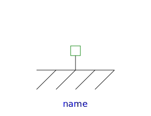
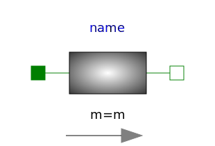
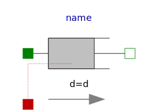
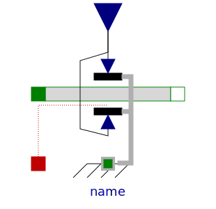
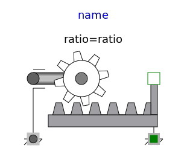
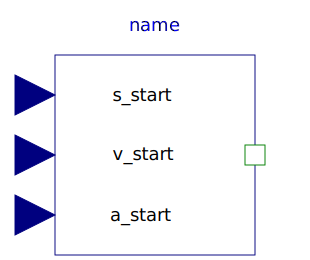
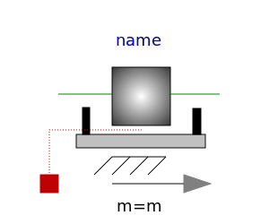
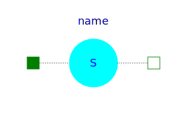

This package contains basic components 1D mechanical translational drive trains.
| Name | Description |
|---|---|
|  Fixed | Fixed flange |
|  Mass | Sliding mass with inertia |
| Rod without inertia | |
| Linear 1D translational spring | |
|  Damper | Linear 1D translational damper |
| Linear 1D translational spring and damper in parallel | |
| 1D translational spring damper combination with gap | |
| Coulomb friction in support | |
|  Brake | Brake based on Coulomb friction |
|  IdealGearR2T | Gearbox transforming rotational into translational motion |
|
|
Simple 1-dim. model of an ideal rolling wheel without inertia |
|  InitializeFlange | Initializes a flange with pre-defined position, speed and acceleration (usually, this is reference data from a control bus) |
|  MassWithStopAndFriction | Sliding mass with hard stop and Stribeck friction |
|  RelativeStates | Definition of relative state variables |